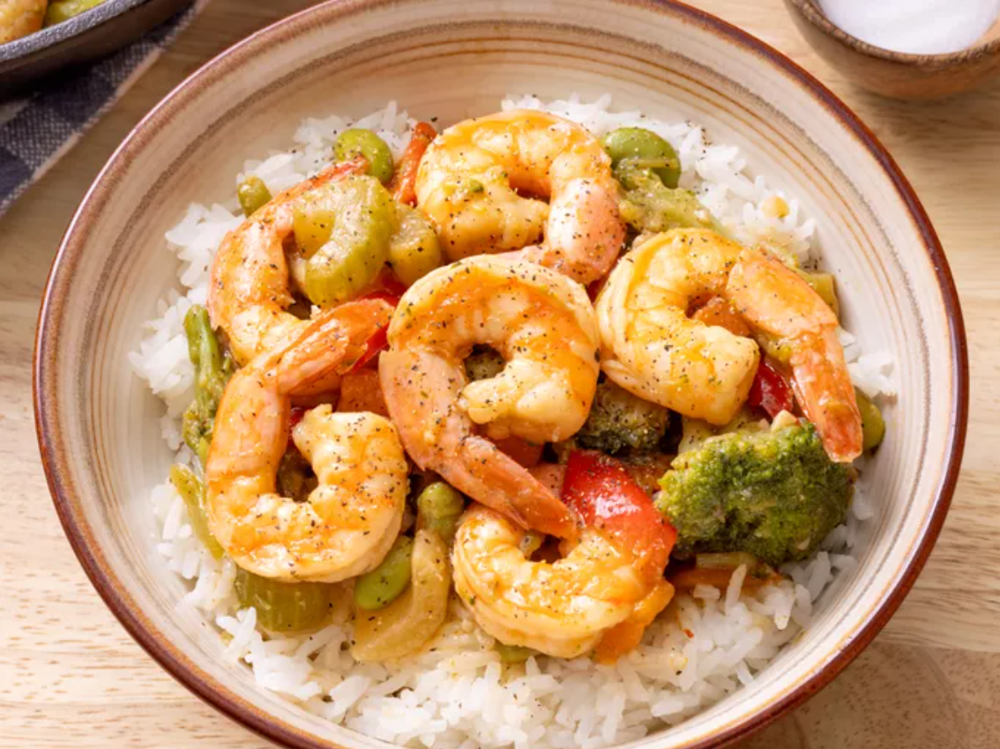

Back to Home
Shrimp Stir Fry Recipe

Description
This shrimp stir fry recipe with frozen vegetables, frozen shrimp, and a simple stir fry sauce — comes together in less than 30 minutes for a quick and easy dinner! Serve over rice or with noodles, and enjoy.
Ingredients
- 1 cup chicken stock
- 1 tablespoon reduced-sodium soy sauce
- 1 tablespoon cornstarch
- 1 tablespoon minced garlic
- Salt and ground black pepper to taste
- 3 tablespoons sesame oil
- 1 (16 ounce) package frozen stir-fry vegetables
- 20 uncooked medium shrimp, peeled and deveined
Directions
- Gather all ingredients.
- Mix chicken stock, soy sauce, cornstarch, and garlic in a bowl; season with salt and pepper.
- Heat sesame oil in a large skillet over medium-high heat until oil shimmers; cook and stir vegetables in hot oil until softened, about 4 minutes.
- Add shrimp; cook and stir until shrimp begin to turn pink, about 3 minutes.
- Stir chicken stock mixture into vegetable-shrimp mixture. Continue to cook and stir until vegetables and shrimp are coated and sauce is thickened, about 5 minutes more.